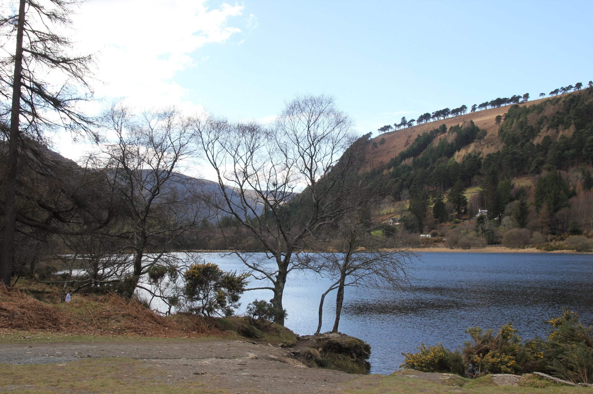

Cub Scouts
Cub Scouts typically meet once a week during school terms. At meetings they play team games and learn Scouting skills like hiking, camping, knots, first aid, cooking and more.
About Cub Scouts
Cub Scouts typically meet once a week during school terms. At meetings they play team games and learn Scouting skills like hiking, camping, knots, first aid, cooking and more. The real adventure is in the outdoors – hill walks up mountains, treasure hunts, one, two or three night camps, litter-picking, parading on Saint Patrick's Day, hostel trips, and sometimes overseas trips.
Children of this age love the outdoors. National events for Cubs include JamÓige – a big camp held every four years for Beavers and Cubs – and the National Cub Challenge each year. There are also lots of events run by the Scout County and Scout Province.
Our Cub section meets every Monday from 1900 to 2030.
